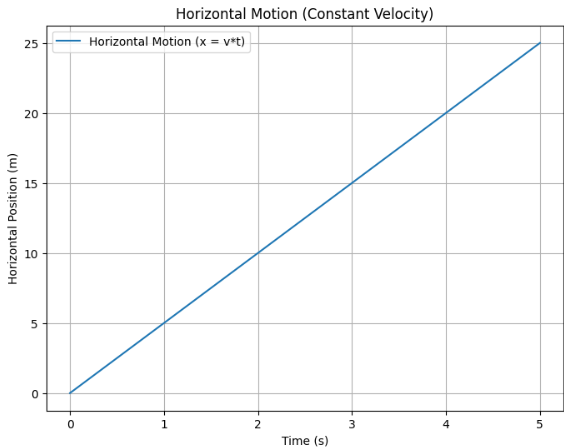
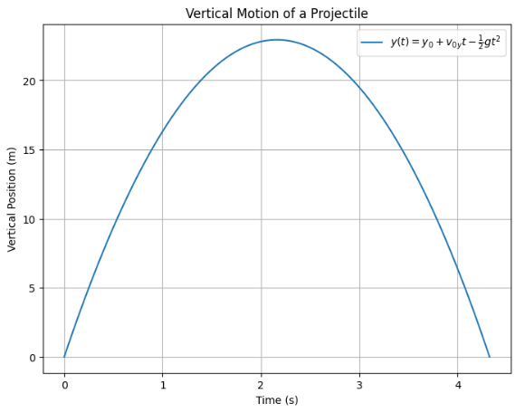
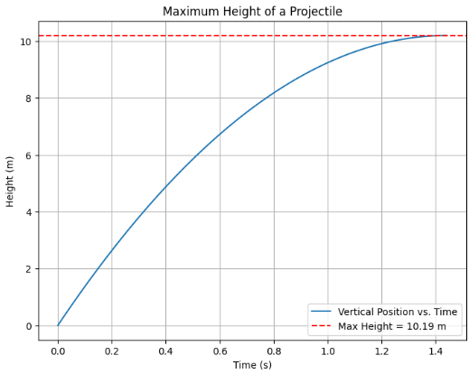
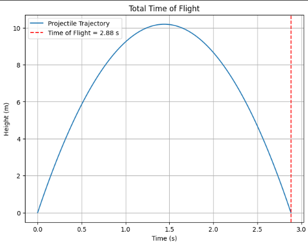
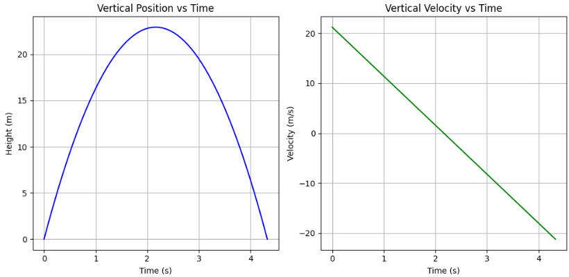
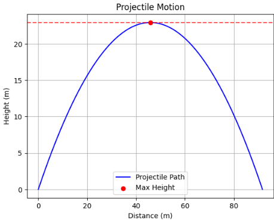
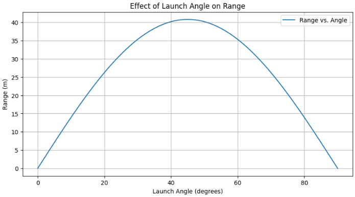
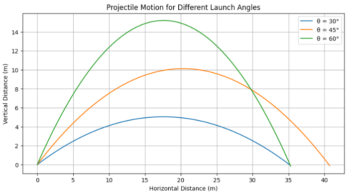
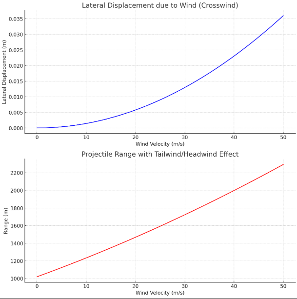
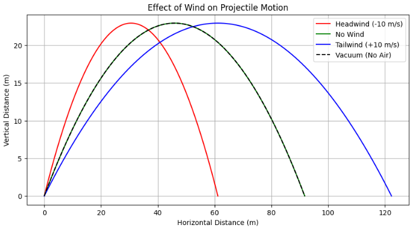

Projectile Motion: A Theoretical and Computational Study
1. Introduction
Projectile motion is a key concept in classical mechanics, describing the motion of an object launched into the air under gravitational acceleration. It applies to various real-world scenarios, such as the path of a thrown ball or a rocket. The motion can be broken down into horizontal and vertical components, each governed by kinematic equations.
This study will explore the mathematical foundations of projectile motion, deriving equations from Newton’s laws and examining how range, time of flight, and maximum height depend on initial conditions. We will also investigate how changes in initial velocity, gravity, and launch height affect the trajectory. A computational approach will be used to simulate and visualize these motions, providing insights into both theoretical and practical applications across fields like sports, engineering, and astrophysics.
2. Governing Equations of Motion
Projectile motion is governed by Newton’s laws of motion. To describe its behavior, we break it down into two components: horizontal motion and vertical motion.
2.1 Horizontal Motion
The horizontal component of projectile motion is characterized by the absence of acceleration (assuming air resistance is negligible). The velocity in this direction remains constant:
where: - ( x ) is the horizontal displacement, - ( v_0 ) is the initial velocity, - ( theta ) is the launch angle, - ( t ) is the time elapsed.
Since there is no horizontal acceleration:
This means the projectile maintains a constant horizontal velocity throughout its flight.
def plot_horizontal_motion():
time = np.linspace(0, 5, 100)
x = 5 * time # Constant velocity motion
plt.figure(figsize=(8, 6))
plt.plot(time, x, label="Horizontal Motion (x = v*t)")
plt.xlabel("Time (s)")
plt.ylabel("Horizontal Position (m)")
plt.title("Horizontal Motion (Constant Velocity)")
plt.legend()
plt.grid()
plt.savefig("horizontal_motion.png")
plt.show()
plot_horizontal_motion()

2.2 Vertical Motion
In projectile motion, the vertical component is influenced by gravity, which causes the projectile to decelerate as it rises and accelerate as it falls back down. This is due to the gravitational force acting downward, pulling the projectile toward the ground. In projectile motion, the vertical component is influenced by gravity, which causes the projectile to decelerate as it rises and accelerate as it falls back down. This is due to the gravitational force acting downward, pulling the projectile toward the ground.
Unlike the horizontal motion, which remains constant (ignoring air resistance), the vertical motion is affected by acceleration due to gravity. This results in a parabolic trajectory, where the object reaches a maximum height before descending back to the ground.
Vertical Position
The vertical position ( y(t) ) at any given time ( t ) is described by the following kinematic equation:
Where: - ( y_0 ) is the initial height of the projectile, - ( v_0 sin(theta) ) is the vertical component of the initial velocity (the vertical velocity at ( t = 0 )), - ( g ) is the acceleration due to gravity (approximately 9.81 m/s²).
Vertical Velocity
The vertical velocity ( v_y(t) ) at any given time ( t ) is given by:
This equation shows that at the start of the motion, the vertical velocity is positive (the object moves upward), but as time progresses, gravity slows down the upward motion. Once the projectile reaches its maximum height, the vertical velocity becomes zero. After that, gravity causes the projectile to accelerate downward.
import numpy as np
import matplotlib.pyplot as plt
# Constants
g = 9.81 # Gravity (m/s^2)
v0 = 30 # Initial velocity (m/s)
theta = 45 # Launch angle (degrees)
y0 = 0 # Initial height (m)
# Convert angle to radians
theta_rad = np.radians(theta)
# Initial vertical velocity
v0y = v0 * np.sin(theta_rad)
# Time array (from t=0 to when projectile hits the ground)
t_max = (2 * v0y) / g
time = np.linspace(0, t_max, num=100)
# Vertical position equation
y = y0 + v0y * time - 0.5 * g * time**2
# Plot vertical motion
plt.figure(figsize=(8, 6))
plt.plot(time, y, label=r( y(t) = y_0 + v_{0} t - frac{1}{2} g t^2 )
, color='b')
plt.axhline(0, color='gray', linestyle='--', linewidth=1) # Ground level
plt.xlabel("Time (s)")
plt.ylabel("Vertical Position (m)")
plt.title("Vertical Motion of a Projectile")
plt.legend()
plt.grid()
plt.show()

2.3 Maximum Height
The projectile reaches its maximum height ( H ) when ( v_y = 0 ):
Solving for ( t_H ) (time to reach maximum height):
Substituting this into the vertical displacement equation:
def plot_maximum_height():
theta = np.radians(45) # 45-degree launch
v0 = 20 # Initial speed
g = 9.81 # Define g here
t_h = (v0 * np.sin(theta)) / g # Time to reach max height
H = (v0**2 * np.sin(theta)**2) / (2 * g) # Maximum height
plt.figure(figsize=(8, 6))
time = np.linspace(0, t_h, 100)
y = v0 * np.sin(theta) * time - 0.5 * g * time**2
plt.plot(time, y, label="Vertical Position vs. Time")
plt.axhline(H, color='r', linestyle="--", label=f"Max Height = {H:.2f} m")
plt.xlabel("Time (s)")
plt.ylabel("Height (m)")
plt.title("Maximum Height of a Projectile")
plt.legend()
plt.grid()
plt.savefig("maximum_height.png")
plt.show()
plot_maximum_height()

2.4 Time of Flight
The total time of flight ( T ) is found by setting ( y = 0 ):
Solving for ( T ), when launched from ground level (( y_0 = 0 )):
For nonzero initial height, a quadratic equation must be solved.
def plot_time_of_flight():
v0 = 20
theta = np.radians(45)
g = 9.81 # Define g within the function
T = (2 * v0 * np.sin(theta)) / g # Total flight time
time = np.linspace(0, T, 100)
y = v0 * np.sin(theta) * time - 0.5 * g * time**2
plt.figure(figsize=(8, 6))
plt.plot(time, y, label="Projectile Trajectory")
plt.axvline(T, color='r', linestyle="--", label=f"Time of Flight = {T:.2f} s")
plt.xlabel("Time (s)")
plt.ylabel("Height (m)")
plt.title("Total Time of Flight")
plt.legend()
plt.grid()
plt.savefig("time_of_flight.png")
plt.show()
plot_time_of_flight()

2.2 Vertical Motion
In contrast to horizontal motion, the vertical component is affected by gravitational acceleration (( g )), causing the projectile to slow down on the way up and speed up on the way down. The vertical position ( y ) at any time ( t ) is given by the kinematic equation:
y = y_0 + v_0 sin(theta) t - \frac{1}{2} g t^2
where: - ( y_0 ) is the initial height of the projectile, - ( v_0 sin(theta) ) is the initial vertical velocity component.
The vertical velocity at any time ( t ) is:
v_y = v_0 sin(theta) - g t
import numpy as np
import matplotlib.pyplot as plt
# Given values
g = 9.81 # Gravity (m/s²)
v0 = 30 # Initial velocity (m/s)
theta = np.radians(45) # Launch angle
y0 = 0 # Initial height (can be adjusted)
# Time of flight
T = (2 * v0 * np.sin(theta)) / g
# Time values
t = np.linspace(0, T, num=500)
# Vertical position y(t)
y = y0 + v0 * np.sin(theta) * t - 0.5 * g * t**2
# Vertical velocity v_y(t)
v_y = v0 * np.sin(theta) - g * t
# Plot vertical position (y) vs time
plt.figure(figsize=(10, 5))
plt.subplot(1, 2, 1)
plt.plot(t, y, label="Vertical Position (y)", color='b')
plt.xlabel("Time (s)")
plt.ylabel("Height (m)")
plt.title("Vertical Position vs Time")
plt.grid(True)
# Plot vertical velocity (v_y) vs time
plt.subplot(1, 2, 2)
plt.plot(t, v_y, label="Vertical Velocity (v_y)", color='g')
plt.xlabel("Time (s)")
plt.ylabel("Velocity (m/s)")
plt.title("Vertical Velocity vs Time")
plt.grid(True)
# Show the plots
plt.tight_layout()
plt.show()

2.3 Maximum Height
** Maximum Height in Projectile Motion**
The maximum height (H) is the highest point a projectile reaches when its vertical velocity becomes zero.
Formula Derivation:
- Time to Reach Max Height (( t_H ))
\(\([ t_H = frac{v_0 sin(theta)}{g} ]\)\) - Maximum Height (( H ))
\(\([ H = frac{(v_0 sin(theta))^2}{2g} ]\)\)
Key Insights:
- Higher ( v_0 ) → Greater Height (H ∝ ( v_0^2 )).
- Larger ( theta ) → More height, less range.
- Lower gravity (e.g., Moon) → Higher peak.
** Python Code for Graphing Maximum Height**
import numpy as np
import matplotlib.pyplot as plt
# Given values
g = 9.81 # Gravity (m/s²)
v0 = 30 # Initial velocity (m/s)
theta = np.radians(45) # Launch angle
# Time to reach max height
t_H = (v0 * np.sin(theta)) / g
# Maximum height
H = (v0**2 * np.sin(theta)**2) / (2 * g)
# Time of flight
T = (2 * v0 * np.sin(theta)) / g
# Generate time values for the full flight
t = np.linspace(0, T, num=500)
# Calculate x and y values for projectile motion
x = v0 * np.cos(theta) * t
y = v0 * np.sin(theta) * t - 0.5 * g * t**2
# Plot the projectile path
plt.plot(x, y, label="Projectile Path", color='b')
# Mark maximum height on the plot
plt.scatter(v0 * np.cos(theta) * t_H, H, color='r', label="Max Height", zorder=3)
# Add a dashed line for the maximum height
plt.axhline(H, linestyle="dashed", color='r', alpha=0.7)
# Add labels, title, and grid
plt.xlabel("Distance (m)")
plt.ylabel("Height (m)")
plt.title("Projectile Motion")
plt.legend()
plt.grid()
# Show the plot
plt.show()
# Output time of flight
print(f"Time of Flight: (T:.2f) seconds")

2.4 Time of Flight
The total time of flight ( T ) is found by setting ( y = 0 ):
0 = y_0 + v_0 sin(theta) T - frac{1}{2} g T^2
Solving for ( T ), when launched from ground level (( y_0 = 0 )):
T = frac{2 v_0 sin(theta)}{g}
For nonzero initial height, a quadratic equation must be solved.
3. Analysis of Range Dependence on Launch Angle
The horizontal range ( R ) is given by:
R = frac{v_0^2 sin(2theta)}{g}
- The range is maximized when ( theta = 45^circ ).
- Increasing initial velocity increases the range quadratically.
- If the launch height is nonzero, a more complex formula is required.
The following Python code simulates the effect of launch angle on range:
import numpy as np
import matplotlib.pyplot as plt
def projectile_range(theta, v0, g=9.81):
theta_rad = np.radians(theta)
return (v0**2 * np.sin(2 * theta_rad)) / g
angles = np.linspace(0, 90, 100)
ranges = [projectile_range(theta, 20) for theta in angles]
plt.figure(figsize=(10, 5))
plt.plot(angles, ranges, label='Range vs. Angle')
plt.xlabel('Launch Angle (degrees)')
plt.ylabel('Range (m)')
plt.title('Effect of Launch Angle on Range')
plt.legend()
plt.grid()
plt.show()

4. Computational Implementation
A computational approach is useful to visualize projectile motion. The following script simulates projectile motion for different launch angles:
import numpy as np
import matplotlib.pyplot as plt
def projectile_trajectory(theta, v0, g=9.81, dt=0.01):
theta_rad = np.radians(theta)
vx = v0 * np.cos(theta_rad)
vy = v0 * np.sin(theta_rad)
x, y = [0], [0]
while y[-1] >= 0:
vy = vy - g * dt
x.append(x[-1] + vx * dt)
y.append(y[-1] + vy * dt)
return x, y
angles = [30, 45, 60]
plt.figure(figsize=(10, 5))
for angle in angles:
x, y = projectile_trajectory(angle, 20)
plt.plot(x, y, label=f'θ = {angle}°')
plt.xlabel('Horizontal Distance (m)')
plt.ylabel('Vertical Distance (m)')
plt.title('Projectile Motion for Different Launch Angles')
plt.legend()
plt.grid()
plt.show()

5. Limitations and Further Considerations
In the real world, idealized mathematical models do not always perfectly represent reality. When analyzing projectile motion, various external factors complicate the theoretical analysis. If these factors are not considered, significant errors can occur, especially in applications requiring high precision. Below are three major sources of real-world influences that affect projectile motion:
1. Air Resistance and Fluid Dynamics Effects
In reality, a projectile moving through air or any gaseous medium constantly interacts with the surrounding molecules. This interaction results in a drag force that opposes the projectile’s motion.
- Air resistance depends on speed and shape: It is generally proportional to the square of velocity, but at low speeds, it can be more linear.
- Deviation from parabolic trajectory: In an ideal vacuum, a projectile follows a perfect parabolic path. However, due to air resistance, the trajectory bends downward earlier, reducing the projectile's range.
- Ballistic coefficient: For high-speed projectiles like bullets, artillery shells, and missiles, the shape and mass significantly influence air resistance. The ballistic coefficient quantifies these effects.
- Laminar vs. turbulent flow: The airflow around the projectile can transition from smooth (laminar) to chaotic (turbulent), significantly altering the aerodynamic forces. The Reynolds number is an essential parameter in determining whether airflow is turbulent.
These factors must be considered, especially for long-range projectiles or high-speed objects. More accurate modeling involves using Navier-Stokes equations or empirical drag force models.
6. Wind Effects and Atmospheric Variability
Moving air masses (wind) influence both the horizontal and vertical components of projectile motion. Unlike an idealized case where a projectile moves in still air, real-world atmospheric conditions introduce additional forces that modify the trajectory. These effects can be categorized as follows:
Lateral Deviation (Wind-Induced Drift)
If the wind blows perpendicular to the projectile’s trajectory, it can push the projectile sideways, causing lateral displacement. This effect is significant in ballistics, sports physics, and aerospace engineering.
One way to estimate lateral drift is:
\(\([
x_w = \frac{F_w}{m} t^2
]\)\)
where:
- ( x_w ) = lateral displacement due to wind (m),
- ( F_w = C_d rho A v_w^2 / 2 ) is the wind force,
- ( C_d ) = drag coefficient,
- ( rho ) = air density (kg/m³),
- ( A ) = cross-sectional area of the projectile (m²),
- ( v_w ) = wind velocity perpendicular to motion (m/s),
- ( m ) = projectile mass (kg),
- ( t ) = time of flight (s).
A strong crosswind (( v_w neq 0 )) significantly affects the projectile's path, making trajectory corrections necessary.
Acceleration or Deceleration (Tailwind and Headwind Effects)
If the wind moves in the same direction as the projectile (tailwind), it increases the projectile’s effective initial velocity, resulting in a longer range. Conversely, if the wind moves opposite to the projectile (headwind), it slows it down, reducing range.
The effective launch velocity ( v_{text{eff}} ) can be expressed as:
\(\([
v_{text{eff}} = v_0 pm v_w
]\)\)
where:
- ( v_0 ) = initial velocity of the projectile (m/s),
- ( v_w ) = wind velocity along the projectile’s motion (m/s),
- The + sign applies for tailwind (boosting the projectile),
- The − sign applies for headwind (reducing the projectile’s speed).
The range equation, accounting for effective velocity, becomes:
\(\([
R = frac{(v_0 pm v_w)^2 sin 2theta}{g}
]\)\)
where:
- ( R ) = range of the projectile (m),
- ( theta ) = launch angle (°),
- ( g ) = gravitational acceleration (9.81 m/s² on Earth).
If wind speed is substantial, adjustments must be made to the launch angle or velocity to maintain accuracy.

Atmospheric Fluctuations (Air Density, Temperature, and Pressure Effects)
Changes in air density ( rho ) due to fluctuations in temperature, pressure, and humidity influence drag force ( F_d ), which modifies the projectile’s motion.
The drag force is given by:
\(\([
F_d = frac{1}{2} C_d rho A v^2
]\)\)
where:
- ( F_d ) = drag force (N),
- ( v ) = velocity of the projectile relative to air (m/s).
Air density variation follows the ideal gas law:
\(\([
rho = frac{P}{R T}
]\)\)
where:
- ( P ) = atmospheric pressure (Pa),
- ( R ) = specific gas constant for air (~287 J/kg·K),
- ( T ) = absolute temperature (K).
- Higher altitude → Lower air density → Less drag → Greater range.
- Higher humidity → Lower air density → Less drag → Greater range.
- Lower temperature → Higher air density → More drag → Shorter range.
These atmospheric effects must be considered in applications such as long-range artillery, missile guidance, and aerospace navigation to achieve precise trajectory predictions.
In real-world applications, wind effects are analyzed using meteorological data, and corrective adjustments are made to improve accuracy.
3. Variable Gravity and Space Environment Effects
The acceleration due to gravity ( g ) is commonly assumed to be 9.81 m/s² on Earth’s surface, but this value is not constant.
- Reduction at higher altitudes: As the distance from Earth's center increases, gravitational acceleration decreases. For instance, at the top of a mountain or from an aircraft, gravity is slightly weaker.
- Different planetary and space environments: On other celestial bodies, gravity varies significantly. For example, the Moon's gravity is 1.62 m/s², and Mars' gravity is 3.71 m/s², meaning a projectile would travel much farther than on Earth.
- Rotational and Coriolis effects: Due to Earth's rotation, long-range projectiles experience the Coriolis force, which causes a deviation in their path. This effect is crucial for ballistic missiles and long-range artillery calculations.
Realistic Modeling and Numerical Solutions
With the influences mentioned above, modeling projectile motion using basic Newtonian mechanics becomes highly complex.
- Numerical methods are required to solve these equations iteratively.
- Runge-Kutta and Euler methods are commonly used for solving dynamic systems that include air resistance and wind effects.
- Computational Fluid Dynamics (CFD) and simulation software are frequently employed in aerospace, military, and sports engineering for precise aerodynamic analyses.
Conclusion and Summary
While projectile motion is often considered to follow a simple parabolic trajectory, air resistance, wind effects, and variable gravity cause significant deviations. Achieving realistic results requires numerical analysis, advanced physics-based simulations, and experimental measurements. These factors are particularly crucial in fields such as aerospace engineering, military applications, and sports physics, where precision is paramount.
import numpy as np
import matplotlib.pyplot as plt
# Constants
g = 9.81 # Gravity acceleration (m/s²)
theta = np.radians(45) # Launch angle (converted to radians)
v0 = 30 # Initial velocity (m/s)
t_max = (2 * v0 * np.sin(theta)) / g # Maximum flight time
t = np.linspace(0, t_max, num=500) # Time array
# Ideal motion (no wind)
x_ideal = v0 * np.cos(theta) * t
y_ideal = v0 * np.sin(theta) * t - 0.5 * g * t**2
# Wind effects
wind_speeds = [-10, 0, 10] # Headwind (-10 m/s), No Wind (0 m/s), Tailwind (+10 m/s)
colors = ['r', 'g', 'b']
labels = ["Headwind (-10 m/s)", "No Wind", "Tailwind (+10 m/s)"]
plt.figure(figsize=(10, 5))
for i, w in enumerate(wind_speeds):
v_effective = v0 + w # Adjusted velocity due to wind
x_wind = v_effective * np.cos(theta) * t # New x positions
y_wind = v0 * np.sin(theta) * t - 0.5 * g * t**2 # Y remains unchanged
plt.plot(x_wind, y_wind, color=colors[i], label=labels[i])
# Formatting the graph
plt.plot(x_ideal, y_ideal, '--k', label="Vacuum (No Air)")
plt.xlabel("Horizontal Distance (m)")
plt.ylabel("Vertical Distance (m)")
plt.title("Effect of Wind on Projectile Motion")
plt.legend()
plt.grid()
plt.show()
---

7. Conclusion
The study of projectile motion offers valuable insights into fundamental physics, providing a clear understanding of motion under the influence of gravity. Through analytical and computational approaches, several key findings have been established:
- Optimal launch angle for maximum range: In an ideal vacuum with no external forces, the maximum horizontal distance is achieved at an angle of 45°. However, in real-world conditions, factors such as air resistance and varying gravitational effects may shift this optimal angle.
- Impact of initial velocity: The range of a projectile depends quadratically on its initial velocity. This means that even a small increase in launch speed results in a significantly greater range, making velocity a crucial factor in applications like ballistics, sports, and aerospace engineering.
- Computational validation of theoretical models: Simulations using numerical methods confirm classical theoretical predictions. These computational approaches are essential for complex scenarios where analytical solutions become impractical due to external forces such as drag and wind.
Although the basic principles of projectile motion are well understood, expanding this study to incorporate air resistance, wind effects, and variable gravity would enhance its accuracy and practical relevance. Such refinements are particularly valuable in engineering, military applications, space exploration, and sports science, where precise trajectory predictions are essential.